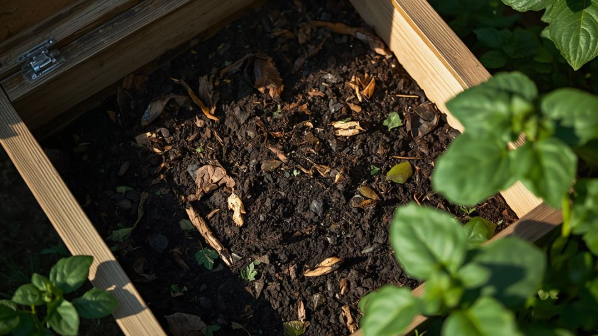

Kompost richtig anlegen: was reinkommt, was nicht, wann er fertig ist
Ein Komposthaufen, der stinkt, macht fast immer denselben Fehler: zu viel Feuchtes, zu wenig Luft.
Kompostieren ist kein Abfall-Wegkippen, sondern Verrottung unter kontrollierten Bedingungen. Die Mikroorganismen, die aus Küchen- und Gartenresten Humus machen, brauchen vier Dinge: Grünes, Braunes, Luft und etwas Feuchtigkeit. Stimmt das Verhältnis, hast du in einem Jahr beste Gartenerde – ohne Geruch, ohne Ratten, ohne Wissenschaft.
Grün und Braun – das entscheidende Verhältnis
Das ist der ganze Trick. „Grünes" liefert Stickstoff und ist feucht, „Braunes" liefert Kohlenstoff und ist trocken und locker. Wer nur Grünes aufhäuft (Rasenschnitt, Küchenabfälle), bekommt eine faulende, stinkende Masse. Wer beides mischt, bekommt Kompost.
| Grün (Stickstoff, feucht) | Braun (Kohlenstoff, trocken) |
|---|---|
| Rasenschnitt | Herbstlaub |
| Obst- & Gemüsereste | Zweige, Häcksel, Stroh |
| Kaffeesatz, Teereste | Karton, Papier (unbedruckt) |
| frischer Grünschnitt, Unkraut (ohne Samen) | Sägespäne (unbehandelt), trockene Staudenreste |
Als Faustregel etwa gleiche Teile, im Zweifel etwas mehr Braun. Immer abwechselnd schichten oder gut durchmischen – nie eine dicke Lage Rasenschnitt am Stück.
Was nicht auf den Kompost gehört
Nicht alles Organische verrottet unproblematisch. Manches lockt Ratten, anderes überträgt Krankheiten oder Samen zurück ins Beet.
| Gehört nicht rein | Warum |
|---|---|
| Gekochte Speisereste, Fleisch, Fisch, Käse | locken Ratten und Fliegen an |
| Kranke Pflanzen (z. B. Braunfäule, Kohlhernie) | Erreger überleben und wandern zurück ins Beet |
| Wurzelunkräuter & samentragendes Unkraut | keimen im fertigen Kompost weiter |
| Zitrus- & Bananenschalen in Mengen | oft gespritzt, verrotten langsam |
| Asche von Kohle, Hochglanzpapier, Katzenstreu | Schadstoffe bzw. Krankheitsrisiko |
Luft und Feuchtigkeit
Verrottung ist ein aerober Prozess – die Bakterien brauchen Sauerstoff. Deshalb den Haufen locker halten und ein- bis zweimal umsetzen (umschichten). Das ist der wirksamste Beschleuniger überhaupt: Ein einmal umgesetzter Kompost ist Monate schneller fertig. Die Feuchtigkeit sollte sein wie ein ausgewrungener Schwamm – eine Handvoll zusammengedrückt darf nicht tropfen, aber auch nicht stauben. Zu nass: Braunes und Luft rein. Zu trocken: gießen.
Wann ist Kompost fertig?
Reifer Kompost ist dunkelbraun, krümelig und riecht nach Waldboden – nicht mehr nach den Ausgangsstoffen. Er ist auf etwa ein Drittel des Volumens zusammengesackt, fühlt sich kühl an (die heiße Rotte ist vorbei) und die einzelnen Bestandteile sind nicht mehr zu erkennen. Je nach Pflege dauert das sechs Monate bis zwei Jahre. Der einfachste Test: Regenwürmer sind da, es riecht angenehm, es krümelt – dann ab damit aufs Beet oder als oberste Schicht ins Hochbeet.
Die drei häufigsten Probleme
Es stinkt faulig. Zu nass, zu viel Grün, zu wenig Luft – Braunes einarbeiten und umsetzen. Nichts verrottet. Zu trocken oder zu holzig – gießen und Grünes zugeben. Ratten. Fast immer wegen gekochter Reste oder Fleisch – die gehören in die Biotonne, nicht auf den Kompost.
Guter Kompost ersetzt fast jeden gekauften Dünger und macht schweren Boden locker und leichten Boden speicherfähig. Er ist das Nächste, was der Garten einem Perpetuum mobile hat: Was du erntest, kommt als Erde zurück.
Hortini sagt dir je Beet und Kultur, wann Nachdüngen mit Kompost sinnvoll ist – abgestimmt auf Bodenart und Wachstumsphase, statt nach Kalender.
Kostenlos ausprobieren